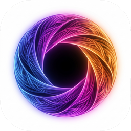

IStudioVisionneuse & studio d'édition d'images
Nouveau projet
Le mode CMJN est enregistré avec le projet ; l'affichage et l'édition restent en RVB.
Impossible d'afficher cette image
–

IStudioVisionneuse & studio d'édition d'images
Le mode CMJN est enregistré avec le projet ; l'affichage et l'édition restent en RVB.
Impossible d'afficher cette image
Traitement local sur la carte graphique (Real-ESRGAN). Les grandes images peuvent prendre plusieurs minutes. Au tout premier lancement, un bref test choisit le processeur graphique le plus fiable.